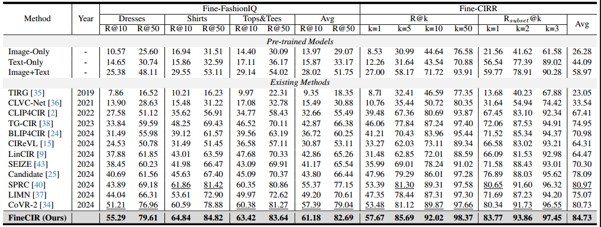

Experiment

Performance comparison on Fine-FashionIQ and Fine-CIRR relative to R@K(%). The overall best
results are in
bold, while the best results over baselines are underlined. The Avg metric in Fine-CIRR denotes (R@5 +
Rsubset@1) / 2.
Performance comparison on original FashionIQ and CIRR relative to R@K(%). The overall best
results are in bold,
while the best results over baselines are underlined. The Avg metric in CIRR denotes (R@5 + Rsubset@1) /
2.
Statistics of fine-grained datasets for CIR compared to two classic CIR datasets, FashionIQ and CIRR. MT
length∗ denotes
the average length of modification texts in the dataset.
Capability of reducing the imprecise positive samples by using the fine-grained modification text
(FineMT).
Comparison of the characteristics of coarse-grained CIR and fine-grained CIR.
Changes in the query number throughout the construction of Fine-FashionIQ.
Changes in the query number throughout the construction of Fine-CIRR.
The ability to distinguish between visually similar samples using FineMT. We showed the top 5 retrieved
results on both
FineFashionIQ and FashionIQ. The target images are framed in green.
The ability to distinguish between visually similar samples using FineMT. We showed the top 5 retrieved
results on both
FineCIRR and CIRR. The target images are framed in green.
Qualitative examples of our proposed FineCIR compared to the sub-optimal CIR model SPRC on Fine-FashionIQ.
Qualitative examples of our proposed FineCIR compared to the sub-optimal CIR model SPRC on Fine-CIRR.